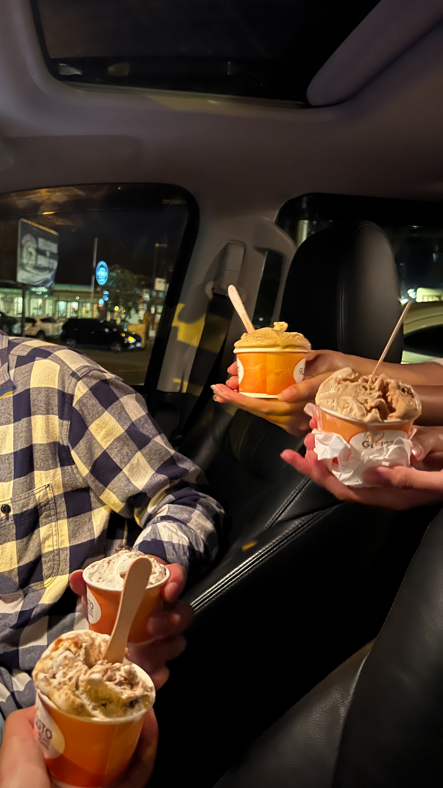
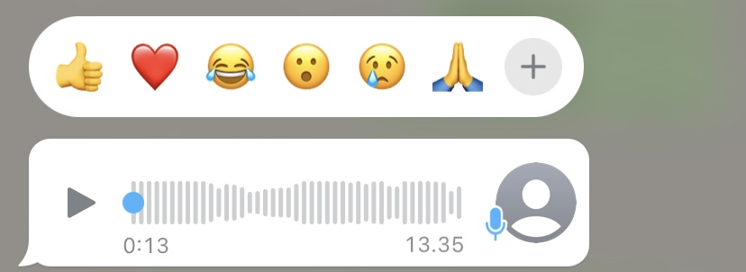
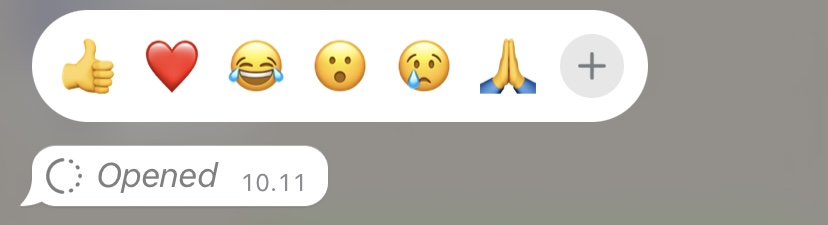

Special For Icha Anatasya
from: Harrys Putra
Hi chaa, how was your day ??, gimana moodnya cha sekarang ?? want to rate ??, sebelum lanjut lebih jauh aku mau minta maaf dulu,
minta maaf karena aku bukan cowok yang bisa merangkai kalimat dengan baik, aku juga bukan cowok yang bisa menulis kalimat dengan romantis ataupun kata-kata puitis,
aku juga bukan cowok yang bisa buat orang baper dengan tutur kataku maupun tulisanku, jadi aku mau minta maaf dulu sebelumnya.
Cha this is first web yang aku buat sendiri (ngga full sendiri juga, ada bantuan youtube, google, dan teman-teman ku yang sudah jago), maaf jka belum bagus dan maaf jika ga sesuai dengan ekspetasi cha. Di web yang aku buat ini, aku mau nyampaiin terimakasi dan mau ngomong sesuatu.
- Hal pertama yang aku mau bilang itu adalah Terimakasi -
Yang paling pertama aku mau ngucap terimakasi banyak sama Tuhan karena telah memberi aku kesempatan buat deket sama cha,
bisa jadi temen cerita cha, bisa jadi temen ketawa cha, bahkan bisa jemput dan kenalan bareng temen-temen cha.
Dulu aku kenal cha layak nya adik kelas ku aja, aku ga pernah berfikir kalau kita sampai di tahap sekarang,
yang dimana dulu aku jarang banget buat mau interaksi sama adik kelas ku apalagi dia perempuan. ntah cerita apa yang Tuhan buat di balik ini semua...
Chaa aku mau ngucap terimakasi telah dikasi kesempatan buat deket sama cha, dikasi kesempatan buat temenan lebih akrab bareng cha,
yang bisa buat aku cerita-cerita tentang apa yang aku rasa, cerita-cerita tentang apa yang terjadi, ya walapun cha kadang gatau harus respon apa.
Terimakasih yaa chaa telah ngasi kesempatan orang random kaya aku masuk di kehidupan cha (walaupun aku gatau sebenarnya cha ngizinin masuk apa ngga),
aku tau sebenarnya aku manusia yang aneh ngapain coba buat web kaya gini untuk ngucapin terimakasi dan ngomong sesuatu,
hehe sebenarnya kalau cha mau tau aku bukan cowok yang pemberani buat ngungkapin sesuatu, aku ga bisa ngomong gini langsung di room chat kita, maka dari itu aku buat web ini.
Cha maaf ya kalau long textnya random kaya gini, aku tulis apa yang terlintas di kepala ku, aku bener-bener bersyukur bisa dikasi kesempatan buat deket bareng cha di keadaan ku yang sekarang,
banyaknya masalah kadang buat aku gila sendiri tapi belakangan ini aku jadi ngerasa lebih senang aja, rasa yang sebenarnya aku ga bisa aku sampaikan dengan sepatah atau dua patah kalimat saja karena itu jelas kurang.
- Yang kedua -
Aku seneng deket bareng cha, seneng di repotin cha, seneng waktu cha mau cerita, seneng bisa kenal cha lebih jauh, seneng bisa fotoin cha dan seneng bisa fotoan bareng cha waktu plt dan sesudah plt,
seneng bisa kenal temen-temen cha, seneng bisa jalan sama cha walaupun sebentar. Aku bukan orang yang gampang buat ngerasain sesuatu sama kaya yang aku ceritain ke cha sebelumnya, tapi waktu kemarin saat aku jemput cha di
Pison Ubud gatau kenapa aku ngerasa seneng, ngerasa bahagia, rasa yang udah lama hilang bisa ada lagi walapun belum pulih.



- Yang ketiga -
Kalau boleh sedikit flashback aku pertama kali tau cha itu pada waktu list liputan gelasis, disana aku liat cha pertama kali, terus tau tentang cha yang anak kelas apa sampai akhirnya tau kl cha itu pacaranya temen ku,
yaa kita makin akrab karena banyak nya acara di lensa, makin bisa bercanda, makin bisa kenal satu sama lain walaupun sebatas kakak kelas dan adik kelas di lensa,
gatau kenapa dan gatau ada apa kenapa sekarang bisa jadi teman cerita.
Bingung, aneh, mikir kok bisa ya padahal rasanya dulu aku saklek li jadi orang, kok bisa ya aku deket ma cha,
kok bisa ya aku sampe di percaya jemput cha, masi jadi tanda tanya saat ini wkwkwk tapi gaapa aku seneng banget (walaupun nanti cha bilang over lagi.)
- Yang keempat dan terakhir -
Aku suka cara cha berbicara, aku suka cara cha menerima seseorang, aku suka excitednya cha kalau bercerita,aku suka ngambeknya cha yang aku paksa anter pulang, aku suka cara cha yang selalu nyuruh aku santaii aja,
aku juga selalu suka di repotin cha (bahkan nanti kalau ada kerja terus aku tau cha ada kenapa, aku bakal tinggalin kerjan ku), aku selalu suka semua tentang cha.
Cha perempuan yang punya karakter kaya aku, ini gatau kenapa aku nangkep nya gitu tapi menurut ku gitu, ya cha cuek aku gatau ya cueknya tu cuman di typing kaya dode apa emang beneran cuek kaya aku,
cha orang yg lucu dan gemas, apalagi waktu pertama kali ngirim vn wkwkwkk itu hal terlucu yg pernah aku dapetin, sama juga kaya photo yg cha kirim pertama kali itu hal tergemas yg pernh aku dapetin wkwkwkw.
Aku minta maaf ya chaa aku malah sering minta pap ke cha sekarang, malah ngelunjak akunya.


Aku gamau terlalu terlihat gimana, aku mau ngalir aja, gimana jalan Tuhan ke aku itu dah berati jalan terbaik, aku juga gatau setelah baca web ini cha masi mau deket lagi atau ngga sama aku,
aku ga pernah mau berharap apa apa , ya I know terlihat bullshit jika aku ngomong gitu tapi nyatanya emang gini, aku manusia yang selalu minta ke Tuhan untuk mematikan segala ekspetasi ku agar aku ga pernah kecewa dengan apa yang di berikan nya.
Cha aku tau cha baru selesai dengan hubungan cha yang lama, mungkin saat ini rumah cha lagi berantakan, rumah yang cha sudah tata dengan rapi malah jadi seperti ini , aku disini orang baru yang gatau banyak tentang cha,
aku disini sebagai tamu yang pertama kali datang kerumah cha, tamu yang notabane nya belum tentu cha kasi masuk karena cha gatau apa niat ku kan ??, tapi kl cha ngasi izin buat masuk dan ngizinin juga buat ngerapiin rumah cha yang lagi berantakan aku bersedia,
walapun nanti ada yang bilang :
"jangan… masi banyak pecahanya, pecahanya nanti malah bikin terluka”.
aku gamasalah dengan hal itu, aku juga ga berharap imbalan apa-apa dari hal itu semua, aku mau ngalir aja sesuai chance yang Tuhan kasi ke aku.
pokoknya usaha dulukan ya, masalah hasil tu belakangan, masalah luka juga belakangan, masalah hati juga belakangan hehehhe
setelah ini apa aku masi bisa chatan dengan cha lagi ?? aku harap si masi boleh ya, aku masi mau liat cueknya cha, masi mau nukarin coupon yang udah aku buat, aku masi mau denger cerita-cerita cha, kalau boleh kasi aku izin ya cha, soalnya aku masi kalah jauh kalau di banding cowok-cowok lain, makanya aku semangat bikin web ini
biar bisa ngalahin mereka semua, ya sii aku kalah ganteng, kalah effort, tapi masa si seorang harrys "nyerah gitu aja", jelas ngga mau lah.
sekali lagi, aku bener-bener ga berharap apapun, ya req cha ga cuek lagi aja heheheheh,
udahh segitu aja web yang bisa aku buat semoga cha suka, maaf kalau ada salahnya, maaf juga kalau ada kurangnya, aku bikin web pertama ini memang khusus buat cha, aku buatnya dengan modal nekat aja, tanpa tau banyak ilmu, "kesempatan ga dateng dua kali, dan ga semua orang pantes buat dapetin kesempatan kedua, maka pada kesempatan pertama ini
aku mau nyoba buat lakuin yang terbaik, dan segala yang aku bisa tanpa sedikitpun ngelakuin kesalahan yang fatal"
so can u give me a chance cha ??
Dari Mata-Jazz
kalau kata Jazz "Oh, mungkin inikah cinta pandangan yang pertama? Kar'na apa yang kurasa ini tak biasa Jika benar ini cinta, mulai dari mana? (Dari mana?) Oh, dari mana?
Dari matamu, matamu, ku mulai jatuh cinta Ku melihat-melihat ada bayangnya Dari mata, kau buatku jatuh Jatuh, terus jatuh ke hati (jatuh ke hati)
Dari matamu, matamu, ku mulai jatuh cinta"